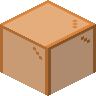

橙色玻璃门
Orange Glass Door
英文名: Orange Glass Door命名空间 ID:
glassential:orange_glass_door类型: 方块所属模组: Glassential-renewed资料检索: 🔎 在 MC百科 搜索「橙色玻璃门」所属标签
合成获得 (1)
原始 JSON
{
"type": "minecraft:crafting_shaped",
"category": "misc",
"pattern": [
"01",
"23",
"45"
],
"key": {
"0": {
"item": "minecraft:orange_stained_glass"
},
"1": {
"item": "minecraft:orange_stained_glass"
},
"2": {
"item": "minecraft:orange_stained_glass"
},
"3": {
"item": "minecraft:orange_stained_glass"
},
"4": {
"item": "minecraft:orange_stained_glass"
},
"5": {
"item": "minecraft:orange_stained_glass"
}
},
"result": {
"id": "glassential:orange_glass_door",
"count": 3
}
}